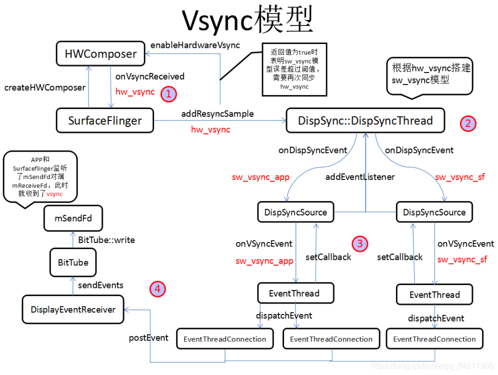

SurfaceFlinger VSYNC
理解SF是如何处理VSYNC
参考文档
VSYNC
VSYNC就像UI的心脏，不停的跳动，驱动这界面不断刷新，接着来看看VSYNC的分发原理，同样以一张图来描述：

HWComposwer负责最原始的hw_vsync信号的生成和分发（硬件Vsync部分），通过onVsyncReceived首先将hw_vsync分发给SurfaceFlinger，SurfaceFlinger接着调用addResyncSample将hw_vsync分发给DispSync。
DispSync接收到的一定数量的hw_vsync之后会计算出sw_vsync模型（Vsync软件模型），在误差范围内会关闭hw_vsync，sw_vsync模型将vsync一分为二，一个给APP，一个给Surfaceflinger，由其内部线程DispSyncThread进行分发。
DispSync::DispSyncThread分发vsync的目标是两个EventThread，APP端和Surfaceflinger端，EventThread通过DispSyncSource中间类来连接DispSync，具体就是EventThread通过函数setCallback向DispSyncSource注册回调，其回调函数为onVSyncEvent，DispSyncSource通过函数addEventListener向DispSync注册回调，其回调函数为onDispSyncEvent。
vsync到EventThread之后，通过其内部线程调用dispatchEvent将vsync传给每个注册了vsync的EventThreadConnection，surfacefling只有唯一一个EventThreadConnection，而每个APP进程都会有一个EventThreadConnection，然后通过其postEvent调用DisplayEventReceiver的sendEvents通知BitTube向mSendFd写数据，BitTube内部是一对socket，一端发送（mSendFd），另一端接收（mReceiveFd），APP和Surfaceflinger都监听了mReceiveFd，此时vsync信号就传递到了APP进程和Surfaceflinger进程中。
DispSync 模型
SurfaceFlinger从HWC2（composer）获取VSYNC Binder回调；
触发SurfaceFlinger Scheduler的DispSyncThread触发信号，从而唤醒loop中的wait进行处理；
* frameworks/native/services/surfaceflinger/SurfaceFlinger.cpp
* void SurfaceFlinger::onVsyncReceived(...)
* mScheduler->addResyncSample(timestamp, vsyncPeriod, &periodFlushed);
* Scheduler/Scheduler.cpp
* void Scheduler::addResyncSample(...)
* needsHwVsync = mPrimaryDispSync->addResyncSample(timestamp, periodChanged);
* Scheduler/DispSync.cpp
* mThread->updateModel(mPeriod, mPhase, mReferenceTime);
* class DispSyncThread : public Thread
* void updateModel(nsecs_t period, nsecs_t phase, nsecs_t referenceTime)
* mCond.signal();
DispSync loop
唤醒loop中的wait后会对HWC（Composer）的事件进行封装；
转交EventThread进行事件处理；
mPendingEvents存储了事件；
* frameworks/native/services/surfaceflinger/Scheduler/DispSync.cpp
* class DispSyncThread : public Thread
* virtual bool threadLoop()
* err = mCond.wait(mMutex);
* if (callbackInvocations.size() > 0)
* fireCallbackInvocations(callbackInvocations);
* for (size_t i = 0; i < callbacks.size(); i++)
* callbacks[i].mCallback->onDispSyncEvent(callbacks[i].mEventTime, callbacks[i].mExpectedVSyncTime);
* Scheduler/DispSyncSource.cpp
* void DispSyncSource::onDispSyncEvent(nsecs_t when, nsecs_t expectedVSyncTimestamp)
* callback->onVSyncEvent(when, expectedVSyncTimestamp);
* Scheduler/EventThread.cpp
* void EventThread::onVSyncEvent(nsecs_t timestamp, nsecs_t expectedVSyncTimestamp)
* mPendingEvents.push_back(makeVSync(mVSyncState->displayId, timestamp, ++mVSyncState->count, expectedVSyncTimestamp));
* DisplayEventReceiver::Event event;
* event.header = {DisplayEventReceiver::DISPLAY_EVENT_VSYNC, displayId, timestamp};
* event.vsync.count = count;
* event.vsync.expectedVSyncTimestamp = expectedVSyncTimestamp;
* return event;
* mCondition.notify_all();
如下是EventThread事件处理
从mPendingEvents获取事件；
* frameworks/native/services/surfaceflinger/Scheduler/EventThread.cpp
* void EventThread::threadMain(std::unique_lock<std::mutex>& lock)
* while (mState != State::Quit)
* if (!mPendingEvents.empty())
* event = mPendingEvents.front();
* mPendingEvents.pop_front();
创建app connection；
创建sf connection；
ConnectionHandle和EventThreadConnection是以map的形式保存在mConnections中；
EventThread分发dispatchEvent是通过BitTube来分发的；
mEventQueue默认就加入了mSfConnectionHandle，但是没有加入mAppConnectionHandle；
* frameworks/native/services/surfaceflinger/SurfaceFlinger.cpp
* void SurfaceFlinger::initScheduler(DisplayId primaryDisplayId)
* mScheduler = getFactory().createScheduler([this](bool enabled)
* mAppConnectionHandle = mScheduler->createConnection("app", ...)
* mSfConnectionHandle = mScheduler->createConnection("sf", ...)
* frameworks/native/services/surfaceflinger/Scheduler/Scheduler.cpp
* Scheduler::ConnectionHandle Scheduler::createConnection(...)
* return createConnection(std::move(eventThread));
* auto connection = createConnectionInternal(eventThread.get(), ISurfaceComposer::eConfigChangedSuppress);
* return eventThread->createEventConnection([&] { resync(); }, configChanged);
* frameworks/native/services/surfaceflinger/Scheduler/EventThread.cpp
* sp<EventThreadConnection> EventThread::createEventConnection(ResyncCallback resyncCallback, ISurfaceComposer::ConfigChanged configChanged) const
* return new EventThreadConnection(const_cast<EventThread*>(this), std::move(resyncCallback), configChanged);
* EventThreadConnection::EventThreadConnection(EventThread* eventThread, ResyncCallback resyncCallback, ISurfaceComposer::ConfigChanged configChanged)
* mEventThread(eventThread)
* mChannel(gui::BitTube::DefaultSize)
* void EventThreadConnection::onFirstRef()
* mEventThread->registerDisplayEventConnection(this);
* mDisplayEventConnections.push_back(connection);
* void EventThread::threadMain(std::unique_lock<std::mutex>& lock)
* auto it = mDisplayEventConnections.begin();
* while (it != mDisplayEventConnections.end())
* consumers.push_back(connection);
* if (!consumers.empty())
* dispatchEvent(*event, consumers);
* for (const auto& consumer : consumers)
* consumer->postEvent(event)
* frameworks/native/services/surfaceflinger/Scheduler/EventThread.cpp
* status_t EventThreadConnection::postEvent(const DisplayEventReceiver::Event& event)
* ssize_t size = DisplayEventReceiver::sendEvents(&mChannel, &event, 1);
* frameworks/native/libs/gui/DisplayEventReceiver.cpp
* ssize_t DisplayEventReceiver::sendEvents(gui::BitTube* dataChannel, Event const* events, size_t count)
* return gui::BitTube::sendObjects(dataChannel, events, count);
* frameworks/native/libs/gui/BitTube.cpp
* ssize_t BitTube::sendObjects(BitTube* tube, void const* events, size_t count, size_t objSize)
* ssize_t size = tube->write(vaddr, count * objSize);
* 数据从BitTube中发出去，问题就是发到哪里去了
* mConnections.emplace(handle, Connection{connection, std::move(eventThread)});
* 返回的是这里的handle
* mEventQueue->setEventConnection(mScheduler->getEventConnection(mSfConnectionHandle));
mSfConnectionHandle的事件处理
* frameworks/native/services/surfaceflinger/SurfaceFlinger.cpp
* void SurfaceFlinger::onFirstRef()
* mEventQueue->init(this);
* mFlinger = flinger;
* mLooper = new Looper(true);
* mHandler = new Handler(*this);
* void SurfaceFlinger::initScheduler(DisplayId primaryDisplayId)
* mScheduler = getFactory().createScheduler([this](bool enabled)
* mAppConnectionHandle = mScheduler->createConnection("app", ...)
* mSfConnectionHandle = mScheduler->createConnection("sf", ...)
* mEventQueue->setEventConnection(mScheduler->getEventConnection(enable ? handle : mSfConnectionHandle));
* frameworks/native/services/surfaceflinger/Scheduler/MessageQueue.cpp
* void MessageQueue::setEventConnection(const sp<EventThreadConnection>& connection)
* mLooper->addFd(mEventTube.getFd(), 0, Looper::EVENT_INPUT, MessageQueue::cb_eventReceiver, this);
* mEventTube.getFd()
* frameworks/native/libs/gui/BitTube.cpp
* int BitTube::getFd() const
* return mReceiveFd;
* MessageQueue::cb_eventReceiver
* int MessageQueue::cb_eventReceiver(int fd, int events, void* data)
* MessageQueue* queue = reinterpret_cast<MessageQueue*>(data);
* return queue->eventReceiver(fd, events);
* while ((n = DisplayEventReceiver::getEvents(&mEventTube, buffer, 8)) > 0)
* if (buffer[i].header.type == DisplayEventReceiver::DISPLAY_EVENT_VSYNC)
* mHandler->dispatchInvalidate(buffer[i].vsync.expectedVSyncTimestamp);
* void MessageQueue::Handler::dispatchInvalidate(nsecs_t expectedVSyncTimestamp)
* mQueue.mLooper->sendMessage(this, Message(MessageQueue::INVALIDATE));
* void MessageQueue::Handler::handleMessage(const Message& message)
* switch (message.what)
* case INVALIDATE:
* mQueue.mFlinger->onMessageReceived(message.what, mExpectedVSyncTime);
* frameworks/native/services/surfaceflinger/SurfaceFlinger.cpp
* void SurfaceFlinger::onMessageReceived(int32_t what, nsecs_t expectedVSyncTime)
* switch (what)
* case MessageQueue::INVALIDATE
* onMessageInvalidate(expectedVSyncTime);
EventThreadConnection实现了IDisplayEventConnection接口
class EventThreadConnection : public BnDisplayEventConnection
IDisplayEventConnection可以通过stealReceiveChannel()接口获取到EventThread中的mConnections
* frameworks/native/services/surfaceflinger/SurfaceFlinger.cpp
* sp<IDisplayEventConnection> SurfaceFlinger::createDisplayEventConnection(...)
* const auto& handle = vsyncSource == eVsyncSourceSurfaceFlinger ? mSfConnectionHandle : mAppConnectionHandle;
* return mScheduler->createDisplayEventConnection(handle, configChanged);
* frameworks/native/services/surfaceflinger/Scheduler/Scheduler.cpp
* return createConnectionInternal(mConnections[handle].thread.get(), configChanged);
* return eventThread->createEventConnection([&] { resync(); }, configChanged);
* frameworks/native/services/surfaceflinger/Scheduler/EventThread.cpp
* sp<EventThreadConnection> EventThread::createEventConnection(...)
* EventThreadConnection::EventThreadConnection(...)
* void EventThreadConnection::onFirstRef()
* mEventThread->registerDisplayEventConnection(this);
HWC
IComposerCallback是SurfaceFlinger给HWC通信的回调
* hardware/interfaces/graphics/composer/2.1/default
* IComposerCallback.hal
HWComposer Callback注册方法
* frameworks/native/services/surfaceflinger/DisplayHardware/HWComposer.cpp
* void HWComposer::setConfiguration(HWC2::ComposerCallback* callback, int32_t sequenceId)
* sp<ComposerCallbackBridge> callbackBridge(new ComposerCallbackBridge(callback, sequenceId, mComposer->isVsyncPeriodSwitchSupported()));
* class ComposerCallbackBridge : public hal::IComposerCallback
* android::hardware::Return<void> onVsync(hal::HWDisplayId display, int64_t timestamp)
* mCallback->onVsyncReceived(mSequenceId, display, timestamp, std::nullopt);
* mComposer->registerCallback(callbackBridge);
* DisplayHardware/ComposerHal.cpp
* void Composer::registerCallback(const sp<IComposerCallback>& callback)
* return mClient->registerCallback(callback);
ps -A | grep composer
system 518 1 11036444 16868 binder_ioctl_write_read 0 S android.hardware.graphics.composer@2.1-service
HWC启动
* hardware/interfaces/graphics/composer/2.1/default/service.cpp
* int main()
* return defaultPassthroughServiceImplementation<IComposer>(4);
* system/libhidl/transport/include/hidl/LegacySupport.h
* __attribute__((warn_unused_result)) status_t defaultPassthroughServiceImplementation(...)
* return defaultPassthroughServiceImplementation<Interface, ExpectInterface>("default", maxThreads);
* status_t result = registerPassthroughServiceImplementation<Interface, ExpectInterface>(name);
* system/libhidl/transport/LegacySupport.cpp
* __attribute__((warn_unused_result)) status_t registerPassthroughServiceImplementation(...)
* status_t status = registerServiceCb(service, serviceName);
* return details::registerAsServiceInternal(service, name);
* system/libhidl/transport/ServiceManagement.cpp
* status_t registerAsServiceInternal(const sp<IBase>& service, const std::string& name)
* sp<IServiceManager1_2> sm = defaultServiceManager1_2();
* registered = sm->addWithChain(name.c_str(), service, chain).withDefault(false);
* system/hwservicemanager/ServiceManager.cpp
* Return<bool> ServiceManager::addWithChain(...)
* return addImpl(name, service, chain, callingContext);
* for(size_t i = 0; i < interfaceChain.size(); i++)
* HidlService *hidlService = ifaceMap.lookup(name);
* bool linkRet = service->linkToDeath(this, kServiceDiedCookie).withDefault(false);
logcat
logcat -s SurfaceFlinger
logcat -s SurfaceFlinger -s DispSyncThread -s DispSync -s surfaceflinger
logcat -s SurfaceFlinger -s DispSyncThread -s DispSync -s BufferQueue -s PhoneWindow -s hwcomposer -s ViewRootImpl
Client
* frameworks/native/services/surfaceflinger/Client.cpp
* Client::Client(const sp<SurfaceFlinger>& flinger) : mFlinger(flinger)
* ALOGI("[SF client] NEW(%p) for (%d:%s)", this, mClientPid, mClientProcName.c_str());
mtk libhwcomposer
vendor/mediatek/proprietary/hardware/libhwcomposer